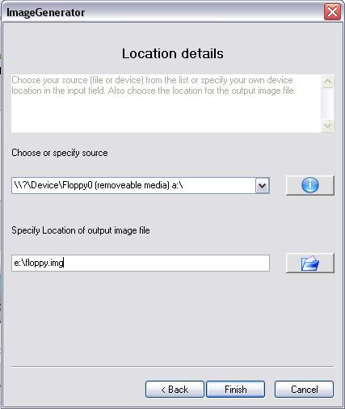

FileExtractor
Starter Guide
Start FileExtractor
Image your Data
- In order to recover your files, you first have to create an exact copy of your device; this copy will be saved on your local harddisk. In the menubar of FileExtractor click on the menu Tools and then the MenuItem ImageGenerator to start this tool, which will exactly do the job.
- A wizard will show up to request some information. Click the button next
The following window will be shown after

- Here you have to define 1) The device, which you want to recover your files from, and 2) The name of the file on your local harddrive, where the exact copy shall be stored.
- In the upper drop-down box choose your input device. (At the end of each entry is exactly the same letter as used for your device in Windows Explorer)
- Choose the location for the exact copy of your device. (This will be somewhere on your hard drive. It can be deleted after your files have been recovered. You must have enough space on this drive - this depends on the size of the device, you are recovering. E.g. - for a 1024MB SD Memory Card you need 1024 MB available space on this drive!!!)
- Start the creation of the copy by clicking the button Finish
Whilst creating the copy of your device (image), the following dialog will be shown
- Ones the creation of the copy has been finished, the OK button on the dialog will be activated. Click on this button.
- You will be asked, whether the new file (the copy) shall be added to your source list. Answer Yes.
Recover your files
- Ones your copy of device has been created, the application main window is shown again. Your files may be recovered from the copy now. The name of your file (the copy) appears in the list of sources already.
- List of signatures: If you know, which type of files you want to recover, you may apply your own selection here. Per default all known file types will be recovered, which is the recommended version.
- Choose a location for the recovered files in the Output Directory area. You may browse through your local file system with the Change Directory Button.
- Start your recovering with clicking on Start Search.
During the recovery process the following dialog will be shown
- This will take some time. E.g. depending on the calculation power and specifications of your computer for the recovery of a 1024 MB Memory Card between 15 minutes and 2 hours.
- Ones, the recovery has been finished, a result dialog will be shown.
Your result dialog will look similar to this dialog
- You can see an overview about how many files have been recovered and how much time this process involved.
- Using your windows explorer browse to the output folder for recovered files, which you have specified just before. You will find the recovered files inside it.